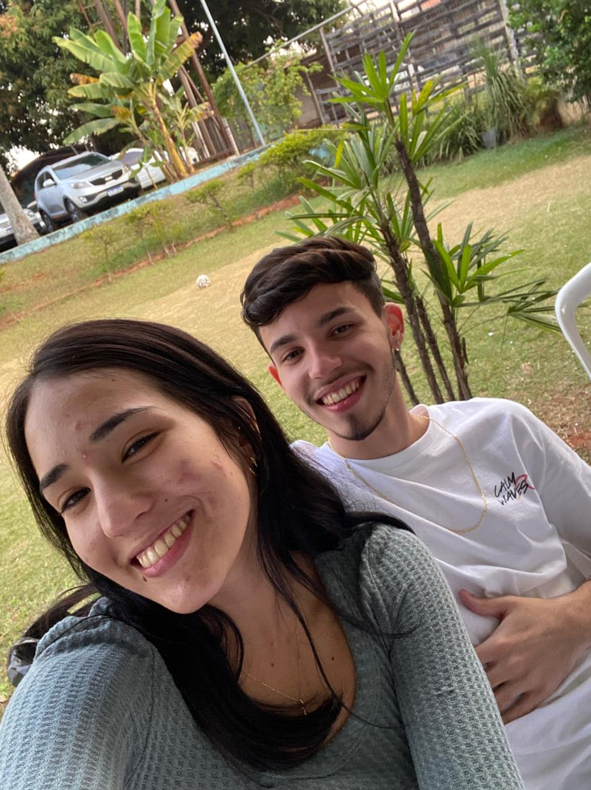
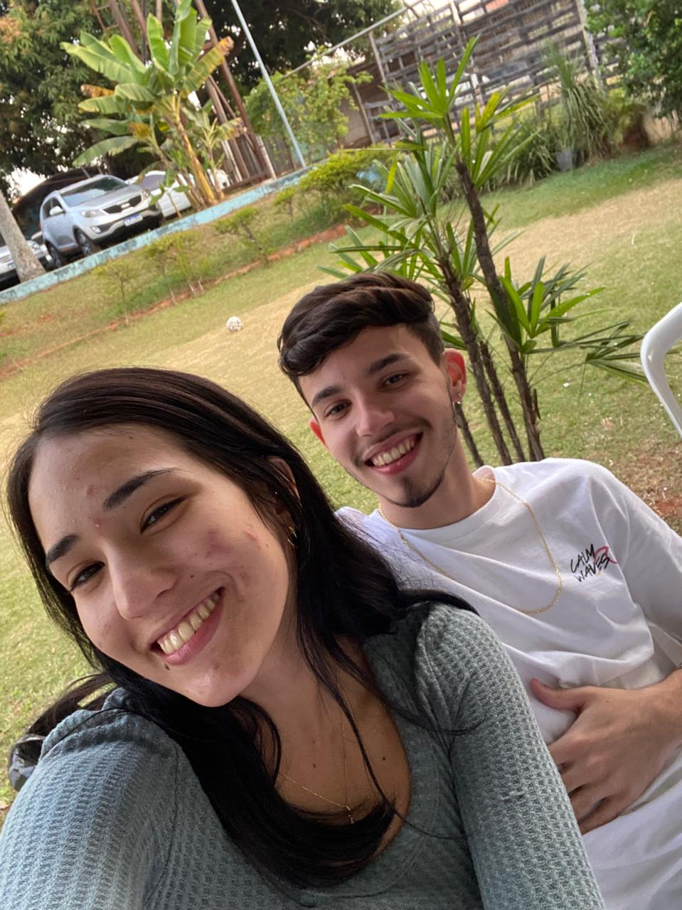
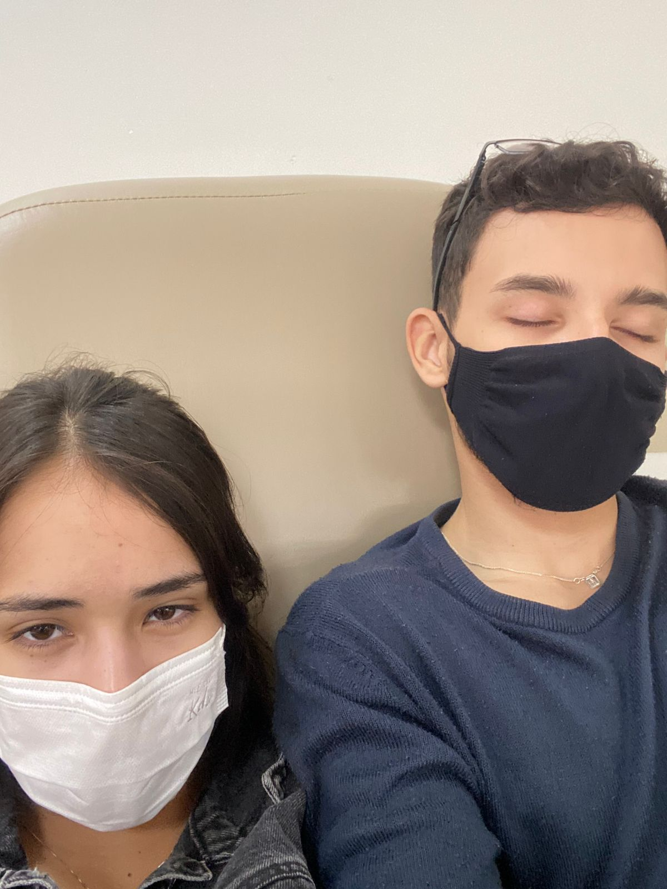
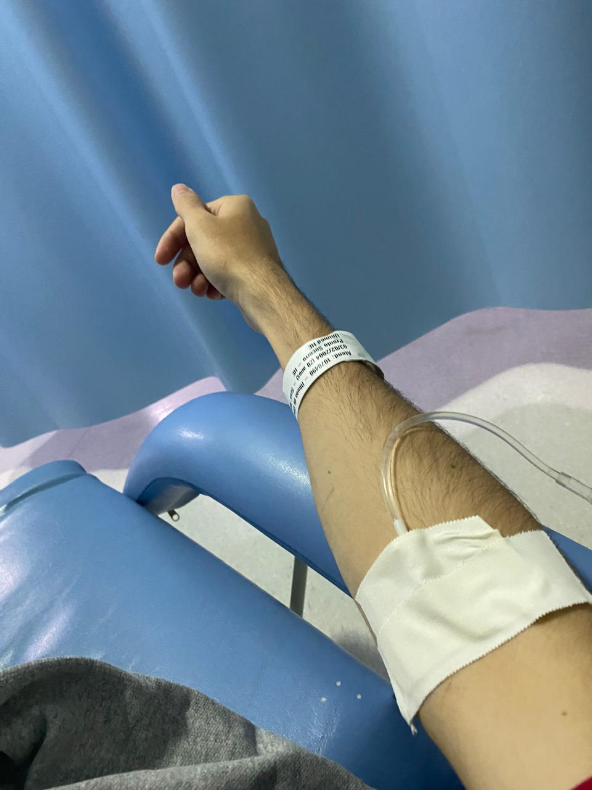
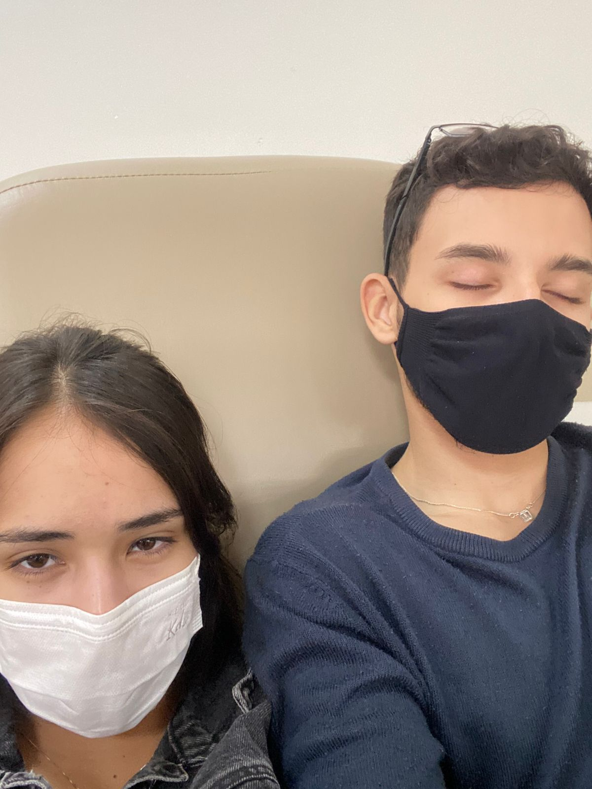
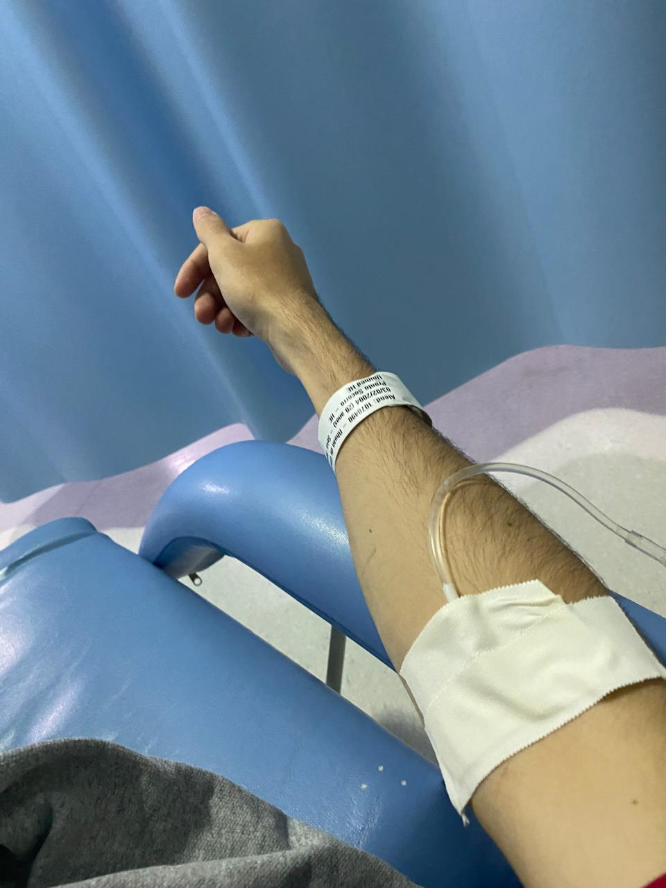
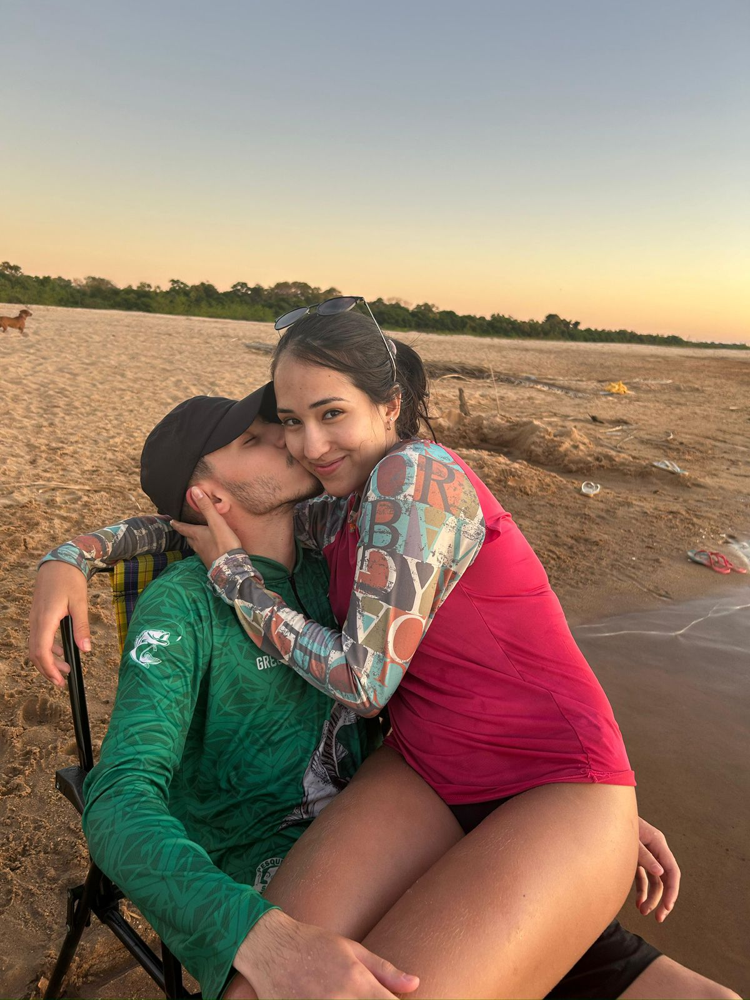
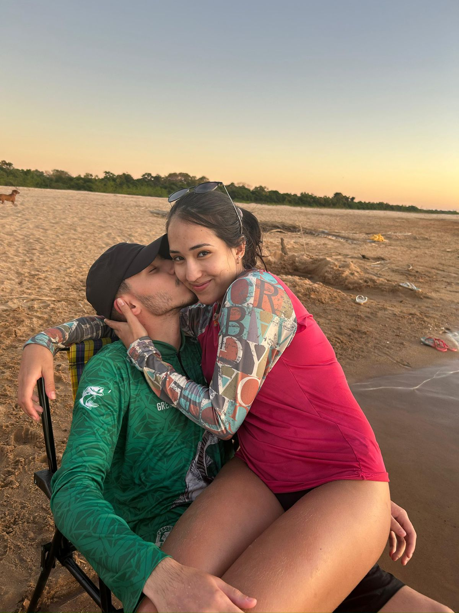

Nossa História
09/06/2023 - O dia em que tudo começou... No show que você odiava, mas acabou que uma das música virou "nossa música". E foi também o dia do nosso primeiro beijo. Fiquei com seu óculos só pra garantir que veria você no dia seguinte ❤️.
11/06/2023 - Foi nesse dia que o clima bateu diferente e a gente começou a querer mais um do outro, se é que me entende 😏. Também foi o dia em que conheci sua casa, porque... olha a coincidência: eu sem celular e você também! pelo menos tinha um carro. E mesmo assim, foi nesse dia que a gente deu um jeitinho e marcou nosso primeiro encontro. 💕. 🥰
12/06/2023 - Nosso primeiro encontro, primeiro Dia dos Namorados e... nossa primeira vez. Tudo no mesmo dia. Um lugar estranho, mas momentos perfeitos ğŸ’.
17/06/2023 - A primeira vez no seu quarto... inesquecÃvel, mesmo com a camisinha 😂.
22/06/2023 - Conheci sua famÃlia no arraiá do SESC. Tava morrendo de vergonha, mas já completamente encantado por você 🥹.
24/06/2023 - O dia que conheceu toda minha famÃlia de uma vez só! kkkk


05/07/2023 - Primeira vez que saÃmos com sua famÃlia. Eu ainda tremia de vergonha rsrs.
09/07/2023 - Primeira vez dormindo juntos ❤️ e também o dia da mesa redonda com sua famÃlia.
15/07/2023 - Nossa primeira DR e a decisão de sermos de verdade. Também foi a primeira bagunça com meus amigos 😅
23/07/2023 - Primeira e última vez que foi pro Araguaia sem mim. Eu senti um vazio gigante... e ali entendi o quanto te amo.

12/09/2023 - O pedido oficial. Só pra selar o que a gente já sentia. Com aliança e tudo ğŸ’

13/11/2023 - Nossa primeira viagem. InesquecÃvel em todos os sentidos 💗
25/12/2023 - 01/01/2024 - Nosso primeiro Natal e Réveillon juntos. O inÃcio de muitas festas lado a lado.
29/03/2024 - Você cuidando de mim, me dando forças. Nesse dia eu soube com certeza: você é meu amor pra vida toda ❤️‍🩹
 
 
30/05/2024 - Voltamos no INTER, onde tudo começou. E o ciclo se renova, mais forte.
13/07/2024 - Nossa segunda viagem, comemorando 1 ano de amor, risadas e conquistas. Que venha muito mais! 🎉
27/07/2024 - Primeiro Araguaia juntos. Foi tudo lindo com você.


17/12/2024 - Conheci o mar... com você. E não podia ter sido mais mágico 🌊💙